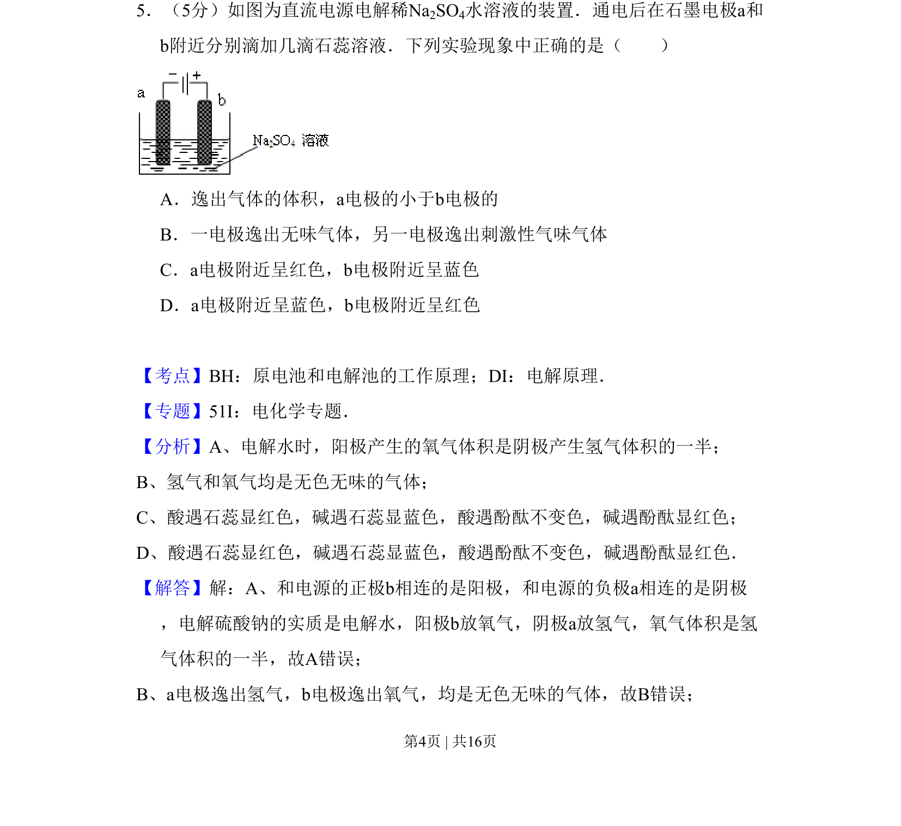
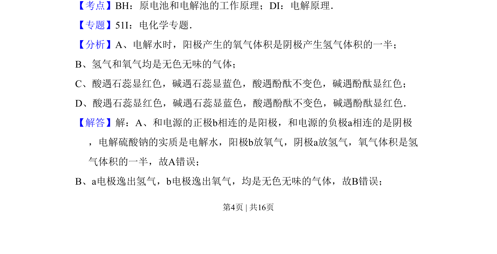
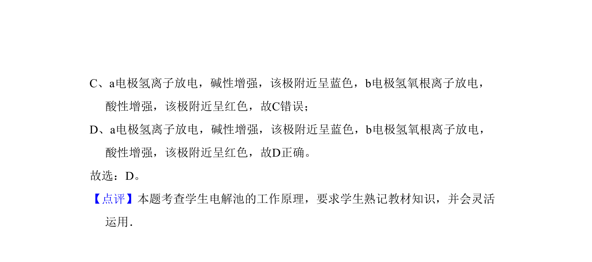

考点：原电池和电解池工作原理 电解原理

这是一道关于电解池原理和酸碱指示剂显色的电化学题，通过电解硫酸钠溶液判断电极反应及石蕊变色现象。


📄 原 PDF 第 4 页：
素材/真题/吉林/2008-2024·（吉林）化学高考真题/2008年高考化学试卷（全国卷Ⅱ）（解析卷）.pdf
5．（5分）如图为直流电源电解稀Na2SO4水溶液的装置．通电后在石墨电极a和 b附近分别滴加几滴石蕊溶液．下列实验现象中正确的是（ ） A．逸出气体的体积，a电极的小于b电极的 B．一电极逸出无味气体，另一电极逸出刺激性气味气体 C．a电极附近呈红色，b电极附近呈蓝色 D．a电极附近呈蓝色，b电极附近呈红色
【考点】BH：原电池和电解池的工作原理；DI：电解原理．菁优网版权所有 【专题】51I：电化学专题． 【分析】A、电解水时，阳极产生的氧气体积是阴极产生氢气体积的一半； B、氢气和氧气均是无色无味的气体； C、酸遇石蕊显红色，碱遇石蕊显蓝色，酸遇酚酞不变色，碱遇酚酞显红色； D、酸遇石蕊显红色，碱遇石蕊显蓝色，酸遇酚酞不变色，碱遇酚酞显红色． 【解答】解：A、和电源的正极b相连的是阳极，和电源的负极a相连的是阴极 ，电解硫酸钠的实质是电解水，阳极b放氧气，阴极a放氢气，氧气体积是氢 气体积的一半，故A错误； B、a电极逸出氢气，b电极逸出氧气，均是无色无味的气体，故B错误；